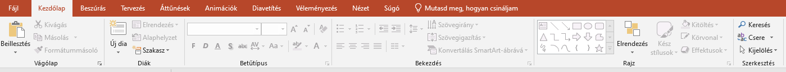

A kezdőlap az eszköztár egyik menü ablaka melyben a leggyakrabban használt funkciók találhatóak meg.

Rajta olyan hasznos funkció találhatóak mint:
- Beillesztés
- Új Dia
- Elrendezés
- Szakasz
- Betűtípus
- Bekezdés
A beillesztéssel képeket szöveget tudunk beilleszteni.
Az új dia létrehoz egy új oldalt/diát. Az alatta lévő kis nyíl különböző stílusú diákot hoz létre.
Az elrendezéssel a jelenlegi dia stílusait tudjuk módosítani.
A szakasszal a diáinkat szedhetjük szét tematikák szerint.
A betűtípus, bekezdés a Wordhöz hasonlóan a betűméret,szín,stílus,felsorolás,igazítás beállításait tartalmazza.
Általánosan ami megegyezik az előző kurzusban tanultakhoz, vagy ismerős az ugyanazt a funkciót látja el így gondoskodva a felhasználóbarátságról. Így amikor a jobb alsó sarokban lévő kis nyilakat használjuk az ugyancsak mint ott további a témának megfelelő funkciókat megnyitó ablakért felel.
Általános jó tanácsok szintén hasonlóak miszerint érdemes sokszor menteni, többféleképpen is meglehet oldani a dolgokat nem kell ragaszkodni egy metódushoz, ha bármiben nem vagyunk biztosak érdemes rá vinni az egeret és kiírja a funkciót, valamint ha olyat tettünk amit nem szerettünk volna a vissza nyíl visszahozza az előző állapotot.